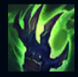
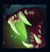
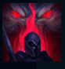
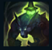
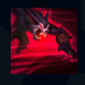

Warwick
| Warwick The Uncaged Wrath of Zaun | |
|---|---|
| Release date | 21.02.2009 |
| Class | Diver |
| Positions | Jungle |
| Resource | Mana |
| Range type | Melee |
| Adaptive type | Physical |
| Base statistics | |||
| Health | 550 – 1995 | Mana | 280 – 875 |
| Health regen. | 4 – 16.75 |
Mana regen. | 7.465 – 17.24 |
| Armor | 33 – 87.4 | Attack damage | 65 – 116 |
| Magic resist. | 32 – 53.25 | Crit. damage | 175% |
| Move. speed | 335 | Attack range | 125 |
Warwick e un monstru care vânează de-a lungul și de-a latul aleilor cenușii din Zaun. În urma unor experimente agonizante, trupul său e contopit cu un sistem complex de camere și pompe, mașinărie ce-i umple venele cu o furie alchimică. Pândind din umbră, vânează criminalii care terorizează nivelurile mai adânci ale orașului. Warwick este atras de mirosul sângelui și înnebunește de-a dreptul când îl adulmecă. Nimeni care varsă o picătură de sânge nu-i poate scăpa. |  |
SETE ETERNĂ Atacurile de bază ale lui Warwick provoacă daune magice bonus. Dacă Warwick are mai puțin de 50% viață, se vindecă cu aceeași valoare. Dacă are mai puțin de 25% viață, valoarea vindecării se triplează. |
||
|---|---|---|---|---|
 |
ÎN COLȚII FIAREI Warwick sare înainte și își mușcă ținta, provocându-i daune în funcție de viața ei maximă și vindecându-se în funcție de o parte din daunele provocate. |
|||
 |
MIROSUL SÂNGELUI Warwick simte inamicii care au mai puțin de 50% viață; câștigă viteză de mișcare spre ei și viteză de atac împotriva lor. Când viața acestora scade sub 20%, Warwick își iese din minți, iar bonusurile se triplează. |
|||
|  |
URLETUL BESTIEI Warwick suferă daune reduse timp de 2,5 secunde. La sfârșitul perioadei respective sau atunci când este reactivată abilitatea, Warwick urlă, făcându-și inamicii din apropiere să fugă timp de 1 secundă. |
|||
 |
AMENINȚARE NESFÂRȘITĂ Warwick sare într-o direcție (distanța crește în funcție de viteza de mișcare bonus) și suprimă timp de 1,5 secunde primul campion inamic de care se lovește. |